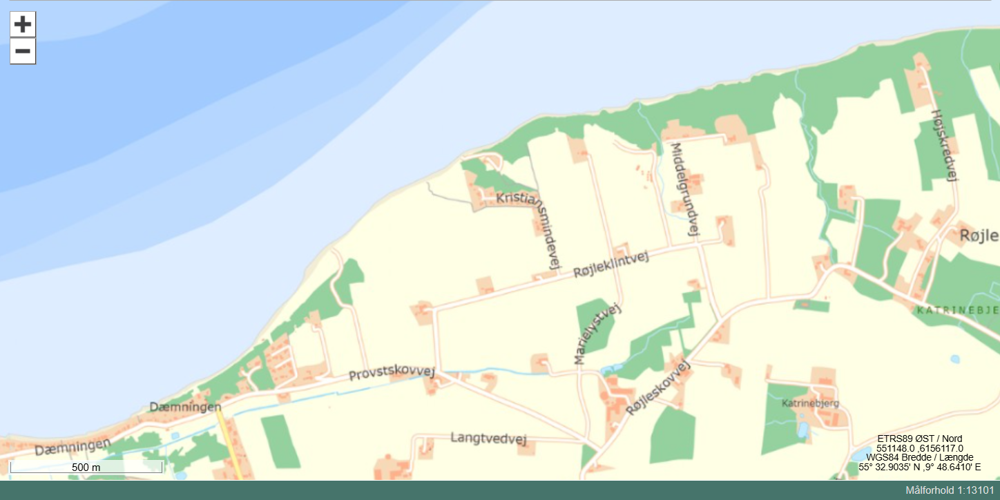
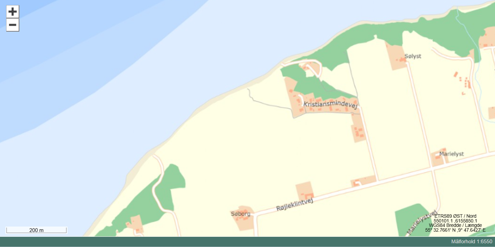
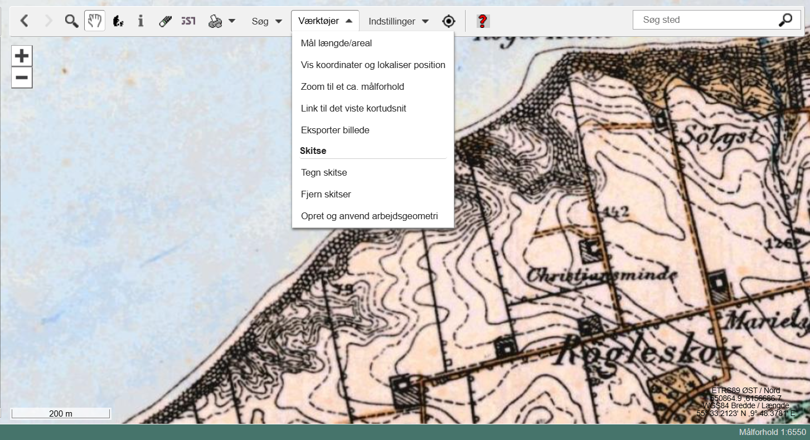
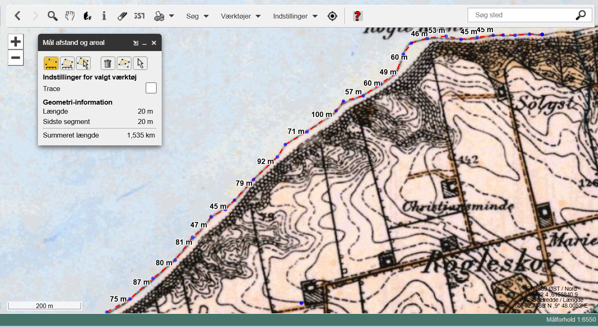
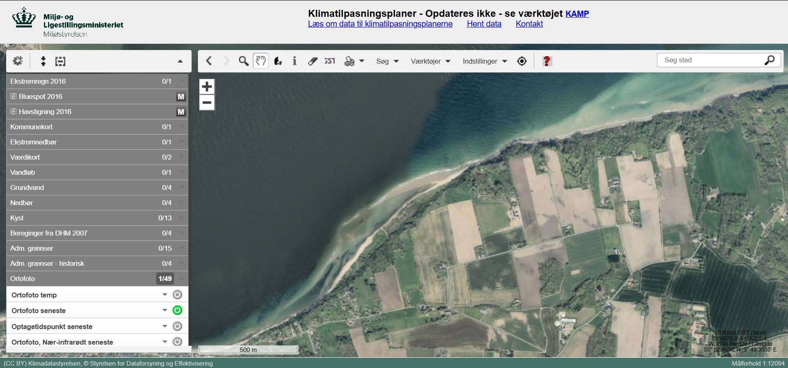
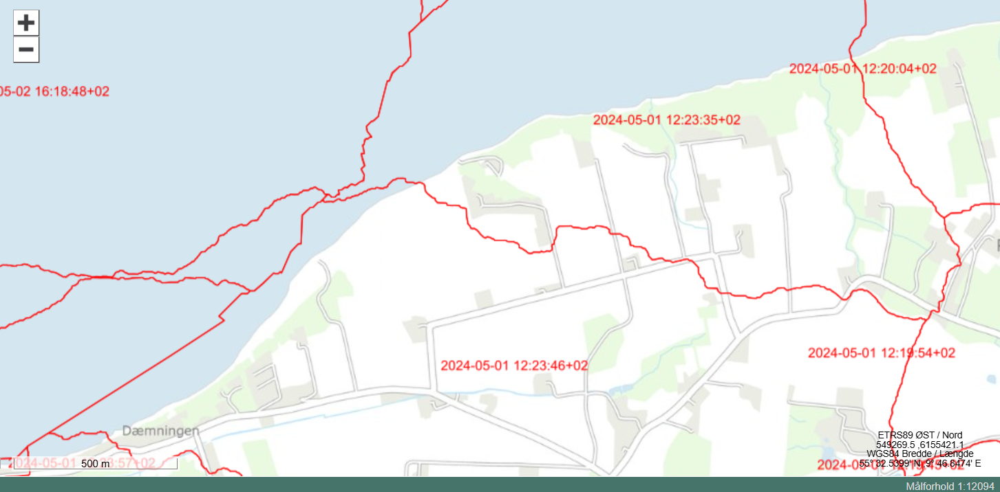
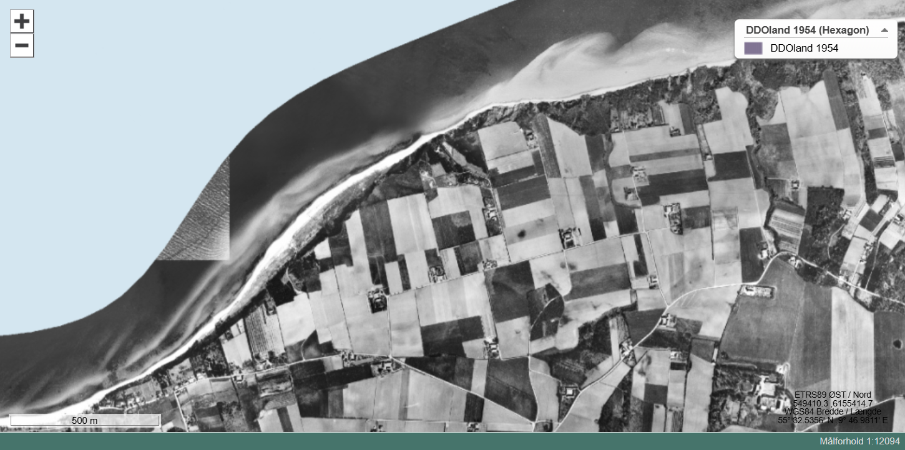
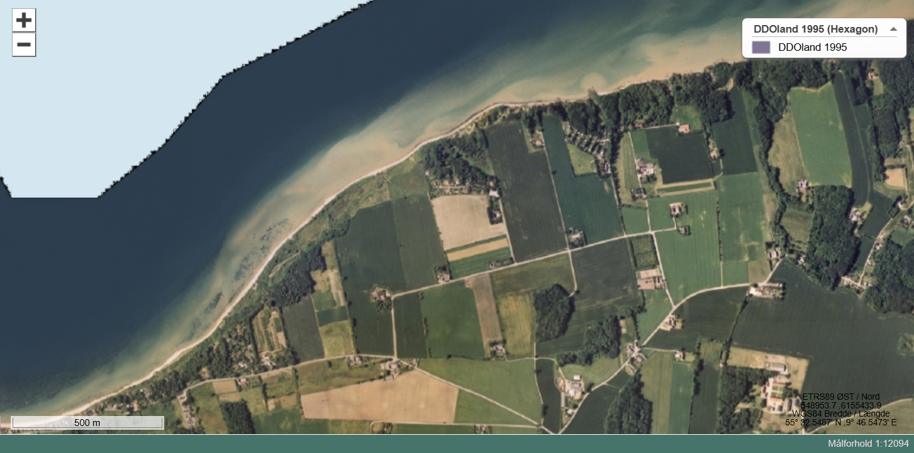

Digital opmåling af kystlinjen ved Røjle Klint
GIS-øvelse over 100 år
Dato: ____________________ Gruppe / navne: ____________________________________________
Om øvelsen
I skal undersøge, hvordan kystlinjen ved Røjle Klint har flyttet sig gennem de sidste ca. 100 år. Det gør I ved i det digitale kortværktøj MiljøGIS at optegne kystlinjen på historiske målebordsblade og ortofoto (luftfotos) fra forskellige år og sammenligne, hvor der er eroderet materiale væk, og hvor der er aflejret nyt.
- Computer med internetadgang
- MiljøGIS: https://miljoegis.mim.dk/spatialmap?&profile=miljoegis-klimatilpasningsplaner
Fremgangsmåde
- Åbn MiljøGIS via linket ovenfor.
- Orienter dig i rullemenuen i venstre side af skærmen, særligt de tre nederste (se Figur 1).
- Klik på Baggrundskort, og vælg Skærmkort (DAF). Zoom ind på området nær Røjle Klint, til du ser noget i stil med Figur 2.

På ekskursionen parkerede vi i den nordlige ende af Kristiansmindevej og gik til stranden vest for Røjle Klint — det er også her, I skal kigge på kortet.
- Zoom endnu mere ind, til dit skærmudsnit ligner Figur 3.

- Uden at ændre på skærmudsnittet skal du nu klikke på Historiske baggrundskort og vælge Høje målebordsblade 1842-1899. Du bør få noget, der ser ud som Figur 4.

- Vælg Værktøjer fra menuen over kortet, og vælg Mål længde/areal.
- Vælg Mål afstand, og tegn kystlinjen op ved at følge den med musen og klikke med jævne mellemrum, særligt når kystlinjen ændrer retning. Figur 5 viser et eksempel på, hvordan det kan se ud — indsæt herefter dit eget skærmprint af resultatet:

(Indsæt eget skærmprint her)
- VIGTIGT! Uden at slette kystlinjen på det gamle kort skal du nu klikke på kortlaget Lave målebordsblade 1901-1971 i menuen til venstre (Historiske baggrundskort). Notér, hvor den gamle kystlinje afviger fra den nye: hvor er der fjernet materiale, og hvor er der tilført materiale?
- Tegn kystlinjen op igen med samme værktøj, og indsæt et skærmprint her:
(Indsæt eget skærmprint her)
- Vælg så Ortofoto 1954 (Hexagon), og sammenlign med kystlinjen fra Lave målebordsblade. Hvad har ændret sig, og hvor er kystlinjen blevet ændret? Indtegn den nye kystlinje, tag et skærmprint, og indsæt det her:
(Indsæt eget skærmprint her)
- Vælg til sidst Ortofoto seneste, og sammenlign med kystlinjen for Ortofoto 1954. Hvilke ændringer kan du få øje på, og hvor? Indtegn den nye kystlinje, og indsæt et skærmprint her:
(Indsæt eget skærmprint her)
Ekstraopgaver
- Find Røjle Klint på det sammenstykkede foto af Danmark, Ortofoto 1/49, ved at klikke på seneste (se Figur 6).

- Klik på “Optagetidspunkt seneste” (se Figur 7).

- Hvornår er billederne taget?
- Hvilken dato har vi i dag?
- Klik på det ældste ortofoto, DDOland 1954 (Hexagon), og se på skærmprintet i Figur 8.

- Klik på det næstældste ortofoto, DDOland 1995 (Hexagon), og se på skærmprintet i Figur 9.

- Hvad er der sket med stranden vest for Røjle Klint fra 1954 til 1995? (Og hvad er der sket med størrelsen på markerne?)